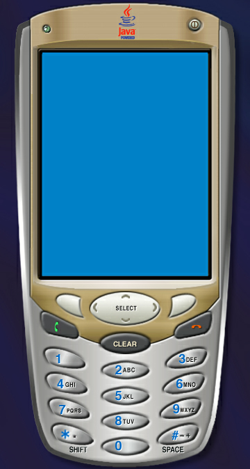
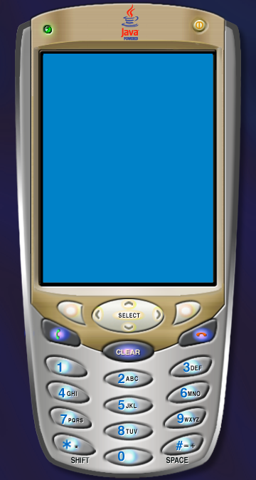
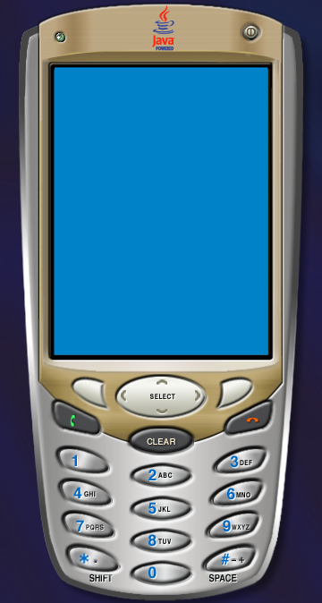
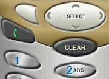
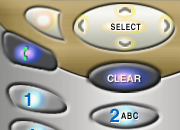
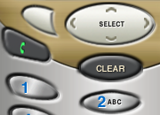
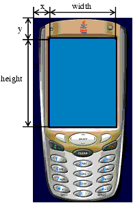
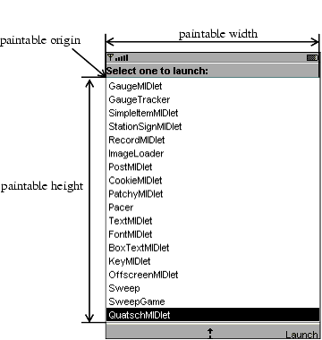

|
|
This chapter describes how emulator skins are defined. You can modify existing skins or create new skins for the emulator. This process is known as skinning the emulator.
Emulator skins are defined by a single property file. Each skin property file is contained in its own subdirectory of {toolkit}\wtklib\devices, where {toolkit} is the installation directory of the J2ME Wireless Toolkit. The name of the property file matches the directory name.
For example, the DefaultColorPhone skin is defined by DefaultColorPhone.properties in the {toolkit}\wtklib\devices\DefaultColorPhone directory.
The skin property file defines the appearance and behavior of the emulator skin. It includes pointers to images and sounds that may or may not reside in the same directory. For example, the DefaultColorPhone directory contains images for the phone itself, but the icons and sounds for DefaultColorPhone are defined in wtklib\devices\Share.
The remainder of this chapter describes the contents of the skin property file. The property file is a plain text file. You can use any text editor to modify it. In general, entries in the property file have a property name followed by a value. A colon or equals sign separates the name and value. Lines that begin with a hash mark (#) are comments.
The simplest way to create a new skin is to copy an existing one and modify it. For example:
DefaultColorPhone directory.NewSkin, rename its contained property file NewSkin.properties.The overall appearance of the emualtor skin is determined by a variety of factors, each of which is described in this section:
Much of a skin’s appearance is determined by three images:
Each of these images shows the entire device. The J2ME Wireless Toolkit uses portions of these images to show button highlights and button presses.
For example, the three images from DefaultColorPhone are shown in FIGURE 1.

A close-up of the keypad is shown here so you can see the differences in the three images.

In the skin property file, the three image files are specified with the following properties:
default_image=<image file name> highlighted_image=<image file name> pressed_buttons_image=<image file name>
The image files can be PNG, GIF, or JPEG. They should all be the same dimensions.
For example, DefaultColorPhone.properties has the following entries:
The screen represents the display of a real device. It is defined by the overall screen bounds, the paintable bounds, and other parameters that determine factors like the number of colors.
The overall screen bounds are the total area of the display. They are defined in pixel measurements relative to the origin of the image files, which is in the upper left corner.

The screen bounds are specified in the property file as follows:
For example:
Most devices do not make their full display area available to MIDP applications. The remainder of the screen is generally reserved for icons and indicators of various kinds. Similarly, the J2ME Wireless Toolkit emulator allows you to define a subset of the full screen, called the paintable area, that is available for MIDP applications. The origin of the paintable area is expressed in coordinates relative to the upper left corner of the display. For example, the DefaultColorPhone emulator skin uses a top bar for icons and a bottom bar for soft labels and other icons, as shown in FIGURE 4.

In the emulator skin property file, the paintable area is expressed as follows:
screenPaintableRegion.x=<x coordinate> screenPaintableRegion.y=<y coordinate> screenPaintableRegion.width=<width> screenPaintableRegion.height=<height>
For example:
screenPaintableRegion.x=0 screenPaintableRegion.y=10 screenPaintableRegion.width=240 screenPaintableRegion.height=290
DefaultColorPhone, this is the entire screen region with the exception of the top bar.
The emulator skin property file determines the number of colors supported by the screen and the aspect ratio of the pixels. First, the following property specifies whether the emulator skin uses color or grayscale.
Another property, colorCount, specifies the number of available colors. For grayscale devices it specifies the number of gray levels.
For example, DefaultColorPhone has a color screen with 4096 colors:
The emulator’s handling of alpha (transparency) is determined by the following property:
Gamma correction can also be enabled by using the following property:
Double buffering can be enabled or disabled with the following property:
The background color that is used for the non-paintable areas of the screen is defined as follows:
For example, DefaultColorPhone uses the following color:
On grayscale devices, the background color of the screen can be set using the following property:
The J2ME Wireless Toolkit emulator supports the use of icons, which are small images that convey information to the user. Usually, icons are placed on the display but outside the paintable area. The emulator implements a fixed set of icons which are described in TABLE 1.
Icons are defined with a location (measured relative to the origin of the screen), a default state, and a list of images that correspond to the possible states. For example, here is the definition of the down icon in DefaultColorPhone. This icon is a downward-pointing arrow that appears when a list or form is shown that is taller than the available screen space.
The first line specifies the location where the icon will be shown, which for DefaultColorPhone is a location in the center of the bottom bar, outside the paintable screen area. The default state is off.
There is no image file that corresponds to the off state, but the on state uses the image down.gif from the wtklib\devices\Share directory.
Another interesting example is the inmode icon, which includes seven states with six corresponding image files:
icon.inmode: 113, 2, off icon.inmode.off: icon.inmode.ABC: ../Share/ABC.gif icon.inmode.abc: ../Share/abc_lower.gif icon.inmode.123: ../Share/123.gif icon.inmode.kana: ../Share/kana.gif icon.inmode.hira: ../Share/hira.gif icon.inmode.sym: ../Share/sym.gif
Another aspect of the emulator that is similar to an icon is the network indicator. Instead of being located in the screen, the network indicator is shown on the emulator skin. In DefaultColorPhone, the network indicator is shown as a small green light in the upper left of the emulator skin. The network indicator is defined using two properties:
For example, in DefaultColorPhone, the network indicator looks like this:
The width and height should match the width and height of the network indicator image.
The fonts used by the emulator are defined in the skin property file. In essence you can define a font for each of the faces, styles, and sizes that are available in MIDP’s Font class. The format is as follows:
You can surmise the fact, style, and size parameters from the MIDP Font API, except the identifiers are lower case in the emulator skin property file. The font face is system, monospace, or proportional, the style is plain, bold, or italic, and the size is small, medium, or large.
The font specifier follows the convention laid out in the J2SE java.awt.Font class. The following example from DefaultColorPhone defines the proportional italic fonts in all three sizes:
font.proportional.italic.small: SansSerif-italic-9 font.proportional.italic.medium: SansSerif-italic-11 font.proportional.italic.large: SansSerif-italic-14
You need to specify a default font that will be used in case no other definition is available. In DefaultColorPhone, a 10-point SansSerif font is used for the default:
Fonts may also be underlined. By default, this is supported by the MIDP implementation, but you can disable for specific fonts like this:
If you wish, you can disable underlining for all fonts like this:
Instead of using system fonts, you have an additional option of using a bitmap font. A bitmap font is simply an image that contains character shapes for a font. The bitmap font image is a single line of text containing one of each character shape. To define a bitmap font, use the following property:
The font property file contains the following property definitions:
font_image = <image file> font_height = <font height> font_ascent = <font ascent> font_descent = <font descent> font_leading = <font leading>
The image file should be in PNG, GIF or JPEG format. It should contain a row of characters:
The height, ascent, descent, and leading are all specified in pixels. If you are unfamiliar with these font terms, refer to the J2SE documentation for java.awt.FontMetrics.
The font property file should also contain a list of mappings between ASCII character codes and horizontal pixel offsets into the image. In the following example, the ASCII code 65 is mapped to the horizontal offset 124:
Once a bitmap font is defined, its name may be used as a font specifier.
Soft buttons are buttons without a fixed function. They will be fully discussed later in this chapter. Labels for the soft buttons are shown on the screen. The emulator skin property file determines where and how the soft button labels are shown.
The fonts for the soft button labels are defined using font aliases, which are short names that you assign to a font. Each soft button label is described by a property:
Valid values for alignment are left, right, and center.
For example, the following properties tell the toolkit to use a Courier 12-point font for the soft button labels. First the font alias softButton is defined. The first label is left-justified, while the second is right-justified.
font.softButton=Courier-plain-12 softbutton.0=1,306,78,16, softButton, left softbutton.1=160,306,78,16, softButton, right
MIDP alerts have associated sounds. In the J2ME Wireless Toolkit emulator, sounds are defined using files, one for each type enumerated in the MIDP AlertType class. The emulator can use any sound file type that is supported by the underlying J2SE implementation. In J2SE SDK 1.4, this includes AIFF, AU, WAV, MIDI, and RMF. For example, here are the definitions in DefaultColorPhone:
alert.alarm.sound: ../Share/mid_alarm.wav alert.info.sound: ../Share/mid_info.wav alert.warning.sound: ../Share/mid_warn.wav alert.error.sound: ../Share/mid_err.wav alert.confirmation.sound: ../Share/mid_confirm.wav
A default sound will be played if no sound is defined for a specific alert type:
In addition, you can define a sound that will be played to simulate a phone’s vibration. In DefaultColorPhone, it looks like this:
There are two parts to describing an emulator skin. The first part is the appearance, which is described above. The second part defines how user input is mapped in the emulator.
A keyboard handler takes button presses and performs an appropriate action in the emulator. For example, if you use the mouse to press one of the soft buttons, it is the keyboard handler that makes the appropriate action happen in the emulator.
The keyboard handler defines a set of standard button names, which you will use when you define buttons. You just have to tell the emulator where the buttons are located in the skin and the keyboard handler takes care of the rest.
The J2ME Wireless Toolkit emulator includes two keyboard handlers, one for phone devices with an ITU-T keypad (DefaultKeyboardHandler) and one for devices with a full Qwerty keyboard. For example, DefaultColorPhone includes this keyboard handler property:
DefaultKeyboardHandler recognizes the following standard button names: 0 through 9, POUND, ASTERISK, POWER, SEND, END, LEFT, RIGHT, UP, DOWN, SELECT, SOFT1, SOFT2, SOFT3, SOFT4, USER1 through USER10.
In QwertyDevice, the keyboard handler looks like this:
QwertyKeyboardHandler supports the same buttons as DefaultKeyboardHandler and also includes buttons found on a standard keyboard like alphabetic keys, shift, and alt.
Buttons are defined using a name and a set of coordinates. If two sets of coordinates are supplied, a rectangular button is defined. If more than two sets of coordinates are present, a polygonal area is used for the button.
The button region is defined relative to the device skin image. When the user moves the mouse over a defined button region, the corresponding region from the skin highlight image is shown. If the user presses a button, the corresponding region from the skin pressed image is shown.
By themselves, buttons aren’t very interesting. They just associate a button name with a rectangular or polygonal region. It’s the keyboard handler’s job to map the button name to a function in the emulator. Later, you’ll see how keys on your desktop computer’s keyboard can be mapped to buttons.
The following property shows how to define a rectangular region for the 5 button. Its origin is 140, 553, with a width of 84 and a height of 37.
Here is an example polygonal definition for the asterisk button:
This polygon is defined using straight line segments connecting the listed points:
Buttons can have one or more associated desktop keyboard keys. This means that you can use your desktop keyboard to control the emulator instead of having to move the mouse over on the device skin and press the mouse button.
For example, DefaultColorPhone allows you to press F1 on your desktop keyboard to simulate the left soft button. The left soft button is defined as SOFT1 in the property file:
And the desktop keyboard shortcut is defined thus:
The actual key definitions are virtual key codes, which are defined in J2SE’s java.awt.event.KeyEvent class. See the J2SE documentation for details.
You can assign multiple desktop keyboard keys to a button, if you wish. In the following example from DefaultColorPhone, the 5 key or the the number pad 5 key on your desktop keyboard are both defined as shortcuts for the 5 button on the emulator skin:
Game actions are already defined in DefaultKeyboardHandler, but you can specify your own game actions with QwertyKeyboardHandler. Use lines of the form:
The function can be one of LEFT, RIGHT, UP, DOWN and SELECT. Standard button names are described earlier in this chapter.
The default settings are:
With QwertyKeyboardHandler, you can specify which character is generated by a button press either alone or in combination with the shift or alt buttons.
Use a line of the form:
The base character is the character the button normally generates, shift character is the character used when the button is pressed at the same time as shift, and alternate character is the character generated when the button is pressed at the same time as alt.
There are two ways you can do a button press at the same time as pressing shift or alt:
For example:
Commands are part of the MIDP specification. They are a flexible way to specify actions that should be available to the user, without mandating how a particular device makes them available.
In general, MIDP devices use soft buttons to invoke commands. The command text is shown on the display, somwhere physically near to the soft buttons. If there are more commands than available soft buttons, the implementation will show one soft button label as a menu. Pressing the menu soft button brings up a menu of available commands.
The J2ME Wireless Toolkit emulator allows you to specify where you want certain types of commands to appear, based on the command types specified in javax.microedition.lcdui.Command. For example, on an emulator skin with two soft buttons, you might prefer that BACK and EXIT commands always appear on the left soft button, while OK commands should appear on the right soft button.
You can specify these types of preferences in the emulator skin property file, using lines like the following:
For example, DefaultColorPhone defines command preferences this way:
command.keys.BACK = SOFT1 command.keys.EXIT = SOFT1 command.keys.CANCEL = SOFT1 command.keys.STOP = SOFT1 command.keys.OK = SOFT2 command.keys.SCREEN = SOFT2 command.keys.ITEM = SOFT2 command.keys.HELP = SOFT2
By specifying additional button names, you can specify other preferred buttons for a particular command type. For example, this line tells the emulator that BACK commands should be mapped to END, if it is available, or SOFT1 otherwise.
Finally, if you wish, you can specify that a soft button will only be used for specific command types. The following definition allows only the command types BACK, EXIT, CANCEL, and STOP to be mapped to the SOFT1 key.
When there are more commands than available soft buttons, commands are placed in a menu. The J2ME Wireless Toolkit emulator offers control over the command menu. You can choose the button which is used to show the menu, the buttons that are used to traverse the items in the menu, and the text labels that are shown for the menu.
The following property, from DefaultColorPhone, tells the emulator skin to use the second soft button to show or hide the menu.
By default, the UP and DOWN buttons are used to traverse the menu, while SELECT is used to choose a command. You can change these assignments using the following properties:
The MIDP specification allows applications (MIDlets) to be paused at any time, possibly in response to other phone events like incoming calls.
You can use the emualtor skin property file to define desktop keyboard shortcuts for pausing and resuming MIDlets. DefaultColorPhone, for example, uses F6 for pausing (suspending) and F7 for resuming:
A single property determines whether the emulator skin has a touch screen. If it does, pointer events will be delivered to Canvases.
A locale is a geographic or political region or community that shares the same language, customs, or cultural convention. In software, a locale is a collection of files, data, and code, which contains the information necessary to adapt software to a specific geographical location.
Some operations are locale-sensitive and require a specified locale to tailor information for users, such as:
In the J2ME Wireless Toolkit emulator, the default locale is determined by the platform’s locale.
To define a specific locale, use the following definition:
A locale name is comprised of two parts separated by an dash (-), for example, en-US is the locale designation for English/United States while en-AU is the designation for English/Australia.
The first part is a valid ISO Language Code. These codes are the lower-case two-letter codes defined by ISO-639. You can find a full list of these codes at a number of sites, such as:
http://www.ics.uci.edu/pub/ietf/http/related/iso639.txt
The second part is a valid ISO Country Code. These codes are the upper-case two-letter codes defined by ISO-3166. You can find a full list of these codes at a number of sites, such as:
http://www.chemie.fu-berlin.de/diverse/doc/ISO_3166.html
The input and output APIs in CLDC use named character encodings to convert between 8-bit characters and 16-bit Unicode characters. Specific MIDP implementation might make only a small set of encodings available for MIDlets to use.
In the emulator, the default encoding is default encoder of the platform you are running on. Your emulator might use other encodings, such as UTF-8 and UTF-16, providing they are available in the J2SE platform.
To define the character encoding used by an emulator skin, use the following definition:
To define the set of all available encodings, use the following definition:
For example:
microedition.encoding: UTF-8 microedition.encoding.supported: UTF-8, UTF-16, ISO-8859-1,ISO-8859-2, Shift_JIS
To support all encodings supported by the J2SE platform, leave the microedition.encoding.supported definition blank, as in:
microedition.encoding.supported entry.
|
|
J2ME Wireless Toolkit Basic Customization Guide J2ME Wireless Toolkit 2.2 |
Copyright © 2004 Sun Microsystems, Inc. All rights reserved. Use is subject to the license terms.